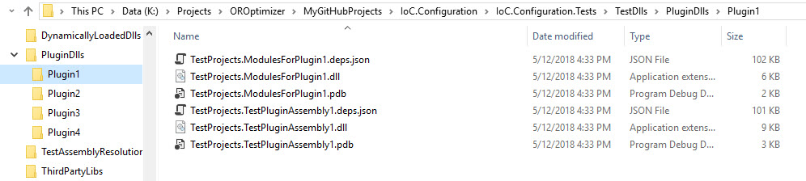

Assemblies and Probing Paths¶
Elements appDataDir, plugins, additionalAssemblyProbingPaths, and assemblies define the assemblies and paths that the IoC.Configuration will search to locate the assembles.
Note
For more information about plugins refer to section Plugins.
Element: appDataDir¶
This element specifies the folder, where IoC.Configuration saves dynamically generated DLLs. The application should have write permissions to path specified in appDataDir.
Example of appDataDir in configuration file:
<appDataDir path="K:\...\IoC.Configuration.Tests\bin\TestFiles\DynamicFiles" />
Element: plugins¶
This element specifies the root folder, where plugin assemblies are, using the attribute pluginsDirPath, as well as might have plugin child elements to declare plugins (for more information about plugins refer to section Plugins).
The assemblies related to a plugin should be copied to a folder [plugins root folder]/[plugin name], where [plugins root folder] is the value of attribute pluginsDirPath of /iocConfiguration/plugins element, and [plugin name] is the value of name attribute in /iocConfiguration/plugins/plugin element.
For example the assemblies for plugin Plugin1 below should be in folder “K:\…\TestDlls\PluginDlls\Plugin1”.
<plugins pluginsDirPath="K:\...\TestDlls\PluginDlls">
<!--
Plugin assemblies will be in a folder with similar name under pluginsDirPath folder.
The plugin folders will be included in assembly resolution mechanism.
-->
<!--A folder K:\...\TestDlls\PluginDlls\Plugin1 should exist. -->
<plugin name="Plugin1" />
<plugin name="Plugin2" />
<plugin name="Plugin3" enabled="false" />
</plugins>
Here is an example of file structure with plugin folders.
Element: additionalAssemblyProbingPaths¶
This element specifies additional folders that IoC.Configuration will use for assembly resolution (this includes resolving assemblies defined in element assemblies as well as re-solving assemblies, on which assemblies in assemblies elements depend).
Here is an example of additionalAssemblyProbingPaths element:
<additionalAssemblyProbingPaths>
<probingPath path="K:\...\TestDlls\ThirdPartyLibs" />
<probingPath path="K:\...\TestDlls\ContainerImplementations\Autofac" />
<probingPath path="K:\...\TestDlls\ContainerImplementations\Ninject" />
<probingPath path="K:\...\TestDlls\DynamicallyLoadedDlls" />
<probingPath path="K:\...\TestDlls\TestAssemblyResolution" />
</additionalAssemblyProbingPaths>
Element: assemblies and assembly¶
The elements assemblies and assembly specify all the assemblies that can be used when referencing types in XML configuration file. The assemblies in assemblies and their dependencies are resolved by looking up for assemblies in folders specified in elements plugins, additionalAssemblyProbingPaths, in addition to default folders (e.g., application startup folder, standard folder for .Net Core assemblies, etc).
Here is an example of assemblies element:
1 <assemblies>
2 <assembly name="TestProjects.TestForceLoadAssembly"
3 alias="TestForceLoadAssembly"
4 overrideDirectory="K:\...\TestDlls\DynamicallyLoadedDlls" />
5
6 <assembly name="OROptimizer.Shared" alias="oroptimizer_shared" />
7 <assembly name="IoC.Configuration" alias="ioc_config" />
8 <assembly name="IoC.Configuration.Autofac" alias="autofac_ext" />
9 <assembly name="IoC.Configuration.Ninject" alias="ninject_ext" />
10
11 <assembly name="TestProjects.Modules" alias="modules" />
12 <assembly name="TestProjects.DynamicallyLoadedAssembly1" alias="dynamic1" />
13 <assembly name="TestProjects.DynamicallyLoadedAssembly2" alias="dynamic2" />
14
15 <assembly name="TestProjects.TestPluginAssembly1" alias="pluginassm1" plugin="Plugin1" />
16 <assembly name="TestProjects.ModulesForPlugin1" alias="modules_plugin1" plugin="Plugin1" />
17 <assembly name="TestProjects.TestPluginAssembly2" alias="pluginassm2" plugin="Plugin2" />
18 <assembly name="TestProjects.TestPluginAssembly3" alias="pluginassm3" plugin="Plugin3" />
19
20 <assembly name="TestProjects.SharedServices" alias="shared_services" />
21 <assembly name="IoC.Configuration.Tests" alias="tests" />
22 </assemblies>
Attributes in assembly element¶
name: Specifies the assembly name without the file extension. Example of this attribute value is IoC.Configuration.Autofac (see the XML above).
alias: A short unique alias to use, when referencing the assembly in other elements.
Here is an example of element that references the assembly with alias dynamic1:
<services> <service type="DynamicallyLoadedAssembly1.Interfaces.IInterface1" assembly="dynamic1"> <implementation type="DynamicallyLoadedAssembly1.Implementations.Interface1_Impl1" assembly="dynamic1" scope="singleton"> </implementation> </service> </services>
plugin: An assembly that is in a plugin folder should include this attribute with value specifying the plugin name.
Here is an example of assembly TestProjects.ModulesForPlugin1 with the value of attribute plugin being Plugin1.
<assembly name="TestProjects.ModulesForPlugin1" alias="modules_plugin1" plugin="Plugin1" />
Note
There should exist some plugin element under element plugins, with the value of attribute name equal to Plugin1.
overrideDirectory: Specifies the directory, where the assembly should be loaded from. Normally this attribute should not be included in element, and the folders specified in elements plugins, additionalAssemblyProbingPaths, in addition to default folders will be searched to locate tbe assembly.
Note
Use this attribute in rare circumstances, to override the default behaviour.
Here is an example of overrideDirectory attribute usage.
<assembly name="TestProjects.TestForceLoadAssembly" alias="TestForceLoadAssembly" overrideDirectory="K:\...\TestDlls\DynamicallyLoadedDlls" />